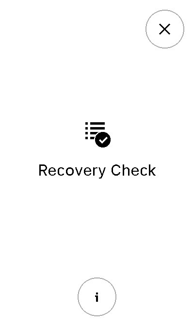

Tutorial
In this tutorial, we are going to develop glue code to leverage the capabilities
of Ragger in order to write tests which are able to run either on
Speculos or on a physical device.
Ragger installation
First step of all is the installation of Ragger. At first, we are going to
test it with Speculos, so we are going to install Ragger with Speculos
dependencies:
$ pip install --extra-index-url https://test.pypi.org/simple/ ragger[speculos]
Some explanation on arguments:
--extra-index-url https://test.pypi.org/simple/is necessary to get the latest version ofRagger, as it is currently not deployed on the stablepypirepositories.ragger[speculos]means than Speculos and its dependencies will also be installed.Raggertries to uncouple its dependencies so that only what is needed is installed. All the extras can be seen in the setup.cfg file.
First backend instantiation
The SpeculosBackend
The BackendInterface really only
needs a Firmware - declaring the type of
Ledger cold wallet to run the application on, and the version of the
given SDK, to be instantiated.
1from ragger.firmware import Firmware
2from ragger.backend import BackendInterface
3
4backend = BackendInterface(Firmware("nanos", "2.1.0")) # this won't work, as it is an abstract interface
However, as we us Speculos which is going to start the application inside an emulator, we need to provide the application ELF file as an argument:
1from ragger.firmware import Firmware
2from ragger.backend import SpeculosBackend
3
4APPLICATION_ELF = "path/to/app.elf"
5
6backend = SpeculosBackend(APPLICATION_ELF, Firmware("nanos", "2.1.0"))
And that’s it, you have a working backend! Although in the case of Speculos,
the emulator won’t start immediately. You need to use a with statement
to start it and begin to exchange APDUs or other events with you application.
1with backend:
2 backend.exchange(cla=0xE0, ins=0x01, data=bytes.fromhex("DEADBEEF"))
3 backend.right_click()
This syntax will ensure that the backends properly clean what needs cleaning once the communication is done. For Speculos, this mean stopping the whole emulator, for other backend it could be as simple as closing a socket.
Backend as a fixture
From this, we are not far away from writing a Pytest fixture, wich could
take place in a conftest.py file, and used in a test_something.py file:
1from pytest import fixture
2from ragger.firmware import Firmware
3from ragger.backend import SpeculosBackend
4
5APPLICATION_ELF = "path/to/application.elf"
6
7@fixture
8def backend() -> SpeculosBackend:
9 backend = SpeculosBackend(APPLICATION_ELF, Firmware("nanos", "2.1.0"))
10 with backend:
11 yield backend
1def test_something(backend):
2 backend.exchange(cla=0xE0, ins=0x01, data=bytes.fromhex("DEADBEEF"))
3 backend.right_click()
This code can then be trigger with Pytest like this:
$ pytest -v test_something.py
=============================== test session starts ===============================
collected 1 item
test_something.py::test_something PASSED [100%]
================================ 1 passed in 0.41s ================================
Generalization
To other firmwares
When testing an application, it sounds logical to test not only a specific Firmware, but all supported ones. The common practice is to test on the latest version of all Firmware (NanoS, NanoS+, NanoX). So we can declare a list of those:
1from ragger.firmware import Firmware
2
3FIRMWARES = [Firmware('nanos', '2.1'),
4 Firmware('nanox', '2.0.2'),
5 Firmware('nanosp', '1.0.3')]
Then we can override the
pytest_generate_tests
function to automatically create a fixture (let’s call it firmware), which
will parametrize every test using this fixture and trigger then with each
declared firmware version:
1def pytest_generate_tests(metafunc):
2fw_list = list()
3ids = list()
4 if "firmware" in metafunc.fixturenames:
5 for fw in FIRMWARES:
6 fw_list.append(fw)
7 ids.append(fw.device + " " + fw.version)
8 metafunc.parametrize("firmware", fw_list, ids=ids)
Now let’s modify our previous backend fixture to use this firmware
fixture:
1@fixture
2def backend(firmware) -> SpeculosBackend:
3 backend = SpeculosBackend(APPLICATION_ELF, firmware)
4 with backend:
5 yield backend
Now this backend fixture is parametrized, and will trigger 3 times, with
successively firmware = Firmware('nanos', '2.1'),
firmware = Firmware('nanox', '2.0.2') and
firmware = Firmware('nanosp', '1.0.3'). The test will also be triggered 3
times, with each time a backend configured with a different application.
Warning
The tests won’t pass, because they may be started with every SDK versions, but the application ELF is not parametrized yet, and is still compiled for only one SDK type and version!
Note
The application ELFs, hence the ELF file path has to be parametrized.
Thankfully, Ragger provides a
app_path_from_app_name
function which infers an application name ELF given its name and the firmware
name.
So, given you have a directory APPS_DIRECTORY where you stored all your
application ELFs, and they are all named as app_nanos.elf,
app_nanosp.elf, app_nanox.elf, this code will deduce their proper
name and location:
1from pathlib import Path
2from pytest import fixture
3
4from ragger.firmware import Firmware
5from ragger.backend import SpeculosBackend
6from ragger.utils import app_path_from_app_name
7
8APPS_DIRECTORY = Path("path/to/")
9APP_NAME = "app"
10
11FIRMWARES = [Firmware('nanos', '2.1'),
12 Firmware('nanox', '2.0.2'),
13 Firmware('nanosp', '1.0.3')]
14
15def pytest_generate_tests(metafunc):
16 fw_list = list()
17 ids = list()
18 if "firmware" in metafunc.fixturenames:
19 for fw in FIRMWARES:
20 fw_list.append(fw)
21 ids.append(fw.device + " " + fw.version)
22 metafunc.parametrize("firmware", fw_list, ids=ids)
23
24@fixture
25def backend(firmware) -> SpeculosBackend:
26 app_location = app_path_from_app_name(APPS_DIRECTORY, APP_NAME, firmware.device)
27 backend = SpeculosBackend(app_location, firmware)
28 with backend:
29 yield backend
And with this, all test should pass gracefully.
$ pytest -v test_something
=============================== test session starts ===============================
collected 3 items
test_something.py::test_something[nanos 2.1] PASSED [ 33%]
test_something.py::test_something[nanox 2.0.2] PASSED [ 66%]
test_something.py::test_something[nanosp 1.0.3] PASSED [100%]
================================ 3 passed in 1.90s ================================
To other backends
So far only Speculos was used as a backend. Let’s see how to connect other ones.
Other backends are simpler the Speculos, because they do not manage the application directly. Indeed, as Speculos embeds an emulator, the application ELF file must be passed as an argument (and parametrized, …).
Other backends do not need this. They assume the application is already up and running somewhere, and will only try to connect on it when the time comes.
We need however the capability to decide which backend will be used when running
the test. Let’s declare a Pytest --backend argument, and a fixture to
access it:
1def pytest_addoption(parser):
2 parser.addoption("--backend", action="store", default="speculos")
3
4@fixture(scope="session")
5def backend_name(pytestconfig):
6 return pytestconfig.getoption("backend")
Now that we are able to now wich backend is chosen, we can write a function returning the correct backend:
1from ragger.backend import LedgerCommBackend, LedgerWalletBackend
2
3BACKENDS = ["speculos", "ledgercomm", "ledgerwallet"]
4
5def create_backend(backend_name: str, firmware: Firmware, display: bool) -> BackendInterface:
6 if backend.lower() == "ledgercomm":
7 return LedgerCommBackend(firmware, interface="hid")
8 elif backend.lower() == "ledgerwallet":
9 return LedgerWalletBackend(firmware)
10 elif backend.lower() == "speculos":
11 args, kwargs = prepare_speculos_args(firmware, display)
12 return SpeculosBackend(*args, firmware, **kwargs)
13 else:
14 raise ValueError(f"Backend '{backend}' is unknown. Valid backends are: {BACKENDS}")
Test can now be launched to run with another backend:
$ # start the application on a physical device connected to the computer, or on an emulator
$ pytest -v --backend ledgercomm test_something.py
Warning
This won’t work - again - because the tests will run for every SDK versions, but the application currently started could only be of one SDK version!
We can allow Pytest to specify the firmware by expanding/modifying our current code:
1from pathlib import Path
2from pytest import fixture
3
4from ragger.firmware import Firmware
5from ragger.backend import SpeculosBackend, LedgerCommBackend, LedgerWalletBackend, BackendInterface
6from ragger.utils import app_path_from_app_name
7
8APPS_DIRECTORY = Path("path/to/")
9APP_NAME = "app"
10
11FIRMWARES = [Firmware('nanos', '2.1'),
12 Firmware('nanox', '2.0.2'),
13 Firmware('nanosp', '1.0.3')]
14
15BACKENDS = ["speculos", "ledgercomm", "ledgerwallet"]
16
17def pytest_addoption(parser):
18 parser.addoption("--backend", action="store", default="speculos")
19 for fw in FIRMWARES:
20 parser.addoption("--"+fw.device, action="store_true", help=f"run on {fw.device} only")
21
22@fixture(scope="session")
23def backend_name(pytestconfig):
24 return pytestconfig.getoption("backend")
25
26def create_backend(backend_name: str, firmware: Firmware, display: bool) -> BackendInterface:
27 if backend.lower() == "ledgercomm":
28 return LedgerCommBackend(firmware, interface="hid")
29 elif backend.lower() == "ledgerwallet":
30 return LedgerWalletBackend(firmware)
31 elif backend.lower() == "speculos":
32 args, kwargs = prepare_speculos_args(firmware, display)
33 return SpeculosBackend(*args, firmware, **kwargs)
34 else:
35 raise ValueError(f"Backend '{backend}' is unknown. Valid backends are: {BACKENDS}")
36
37def pytest_generate_tests(metafunc):
38 if "firmware" in metafunc.fixturenames:
39 fw_list = []
40 ids = []
41 # First pass: enable only demanded firmwares
42 for fw in FIRMWARES:
43 if metafunc.config.getoption(fw.device):
44 fw_list.append(fw)
45 ids.append(fw.device + " " + fw.version)
46 # Second pass if no specific firmware demanded: add them all
47 if not fw_list:
48 for fw in FIRMWARES:
49 fw_list.append(fw)
50 ids.append(fw.device + " " + fw.version)
51 metafunc.parametrize("firmware", fw_list, ids=ids)
52
53@fixture
54def backend(firmware) -> SpeculosBackend:
55 app_location = app_path_from_app_name(APPS_DIRECTORY, APP_NAME, firmware.device)
56 backend = SpeculosBackend(app_location, firmware)
57 with backend:
58 yield backend
And now we can easily specify which firmware should be used:
$ # start the application on a physical device connected to the computer, or on an emulator
$ pytest -v --nanosp --backend ledgercomm test_something.py
=============================== test session starts ===============================
collected 1 items
test_something.py::test_something[nanosp 1.0.3] PASSED [100%]
================================ 1 passed in 0.22s ================================
Abstracting the interactions
Interacting programmatically with an application tends to be a non-trivial thing, as complex processes (like performing a complete transaction) have to be implemented through low-level actions on the device: forging bytes payloads (the APDUs), triggering the buttons or the screen at the right time, in the right places, in the right order, managing several screens, …
Fatstacks
Interacting with the Fatstacks screen, in particular, can be bothersome. It is hard to keep track of button positions, pages layouts and such.
For instance let’s imagine you develop an application with a welcome screen with the application icon in the center, a “quit” clickable button on the top right and a “info” clickable button on the lower center.
If you click on the “quit” button, well the application shuts down.
If you click on the “info” button the screen shows some application infos, with a clickable “return” button on the lower center, which brings back to the previous, welcome screen.
{kind=link}
{kind=link}
This layouts has three clickable buttons. Basic interaction with them would be something like:
1# going into the "info" screen
2backend.touch_finger(197, 606)
3
4# going back into the "welcome" screen
5backend.touch_finger(197, 606)
6
7# quitting the application
8backend.touch_finger(342, 55)
This does not look very complicated. However, this is just obfuscated code. Without extended comment, you can’t ask someone to understand or remember what this code does. This is a guaranteed path to hard to maintain code.
Moreover, these pixel positions are not guaranteed to last. If the SDK chooses
to change some button position, or if higher-level graphic objects (such as
Pages or UseCase) changes the position (nothing prevents them to move
the “quit” button to the top left), all this code becomes deprecated.
That’s why Ragger mimics the Fatstacks SDK graphics library and provides
Layout and Use Case (Page will also come soon) classes
that keep track of every interactive screen elements and expose meaningful
method to interact with them.
Layouts
Ragger’s Layouts and
UseCases allows to
quickly describe an application screens and its attached behavior in a purely
declarative way, thanks to the
MetaScreen metaclass.
For instance, with the previously described application:
1from ragger.firmware.fatstacks.screen import MetaScreen
2from ragger.firmware.fatstacks.layouts import ExitFooter, ExitHeader, InfoFooter
3
4class RecoveryAppScreen(metaclass=MetaScreen)
5 layout_quit = ExitHeader
6 layout_go_to_info_page = InfoFooter
7 layout_return_to_welcome_page = ExitFooter
The metaclass will automatically detect all variables starting with layout_
and create related attributes when the RecoveryAppScreen will be
instantiated. This latter will need - like a lot of Ragger classes - a
backend and a firmware as arguments.
Once instantiated, the created screen can be interacted with in a more flexible way than if positions were still necessary:
1# let's say we still have a ``backend`` and a ``firmware`` fixture
2screen = RecoveryAppScreen(backend, firmware)
3
4# the application starts on the "welcome" page, from here we can either quit
5# the application, or go to the "info" page
6
7# this method call will trigger a ``finger_touch`` with the positions related
8# to the "info" centered lower button
9screen.go_to_info_page.tap()
10
11# now the application is on the "info" screen, it can only go back to the
12# "welcome" page
13screen.return_to_welcome_page.tap()
14
15# now the application is back on the "welcome" screen. Let's quit
16screen.quit.tap()
17
18# the application is now stopped
Note
You may have noticed that the two centered lower buttons (the welcome page
“info” button and the info page “return” button) are exactly at the same
(x, y) positions, so why bother declaring them twice?
First of all, the buttons may be at the same place, but they don’t carry the same purpose, and it is a good idea to reflect that on the code.
Second, if in a future version the Fatstacks design changes and one of these
button moves somewhere else on the screen’s footer, the layouts will be
updated accordingly in Ragger, and the InfoFooter or ExitFooter
will still be valid, hence all code using this class remains valid too.
If these arguments does not convince you, Ragger provides purely
positional Layouts, and you can use CenteredFooter in replacement of both
of these Layouts.
Use cases
But this is not simple enough yet. The previously shown screens are very common, so common in fact that the SDK provides dedicated Use Cases to simplify their creation.
In this case, there is two. In the SDK, they are named:
nbgl_useCaseHome, which displays the “welcome” page, while allowing to access an “info” or “settings” page.nbgl_useCaseSettings, which displays an “info” or “settings” page. This Use Case is very convenient when dealing with multiple info or settings which need several pages to be displayed (hence needs navigation buttons).
Ragger replicates these Use Cases, and provides more meaningful methods on
top of them. Using Use Cases is very similar to Layouts; they need to be
declared as attribute of a class using the MetaScreen metaclass,
and start with use_case_:
1from ragger.firmware.fatstacks.screen import MetaScreen
2from ragger.firmware.fatstacks.use_case import UseCaseHome, UseCaseSettings
3
4class RecoveryAppScreen(metaclass=MetaScreen)
5 use_case_welcome = UseCaseHome
6 use_case_info = UseCaseSettings
7
8# let's say we still have a ``backend`` and a ``firmware`` fixture
9screen = RecoveryAppScreen(backend, firmware)
10
11# the application starts on the "welcome" page, from here we can either quit
12# the application, or go to the "info" page
13
14# this method call will trigger a ``finger_touch`` with the positions related
15# to the "info" centered lower button
16screen.welcome.info()
17
18# now the application is on the "info" screen, it can only go back to the
19# "welcome" page.
20# if the info needed to be shown on several pages, this Use Case also
21# provides navigation methods, ``.next`` and ``.back``
22screen.info.exit()
23
24# now the application is back on the "welcome" screen. Let's quit
25screen.welcome.quit()
26
27# the application is now stopped
The FullScreen class
All these classes helps you tailoring a fairly elegant and straight-forward
client with meaningful and easy to write screen controls. However if you don’t
feel like crafting you own screen representation, Ragger comes with a
FullScreen class
which embeds every existing Layout and Use Case.
It can be used to quickly instantiate a screen which could work with any application screen, however of course, all action on this class are not guaranteed to trigger a desired reaction (or no reaction at all) on the application screen, as declared button can be totally fictional.
1from ragger.firmware.fatstacks.screen import FullScreen
2
3screen = FullScreen(backend, firmware)
4
5# these use case methods will work in our case
6screen.home.info()
7screen.settings.exit()
8screen.welcome.quit()
9
10# layouts are also available, on these method will work too
11screen.info_footer.tap()
12screen.exit_footer.tap()
13screen.exit_header.tap()
14
15# this, however, will just randomly click on the screen and may or may not
16# trigger totally unrelated reaction
17screen.letter_only_keyboard.write("hello world!")